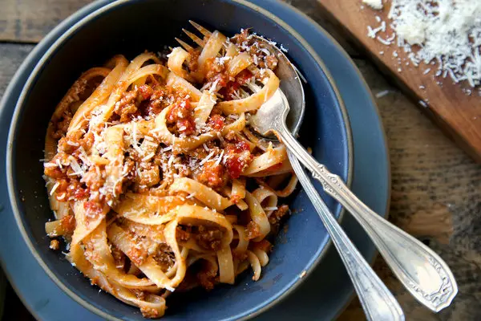

Bolognese Recipe

Description
Ragù, as the Bolognese call their celebrated meat sauce, is characterized
by mellow, gentle, comfortable flavor that any cook can achieve by being
careful about a few basic points:
-
The meat should not be from too lean a cut; the more marbled it is, the
sweeter the ragù will be.
The most desirable cut of beef is the neck portion of the chuck.
-
Add salt immediately when sautéing the meat to extract its juices for
the subsequent benefit of the sauce.
-
Cook the meat in milk before adding wine and tomatoes to protect it from
the acidic bite of the latter.
-
Do not use a demiglace or other concentrates that tip the balance of
flavors toward harshness.
-
Use a pot that retains heat. Earthenware is preferred in Bologna and by
most cooks in Emilia-Romagna, but enameled cast-iron pans or a pot whose
heavy bottom is composed of
layers of steel alloys are fully
satisfactory.
-
Cook, uncovered, at the merest simmer for a long, long time; no less
than 3 hours is necessary, more is better.
Ingredients
- 1 tablespoon vegetable oil
- 3 tablespoons butter plus 1 tablespoon for tossing the pasta
- ½ cup chopped onion
- ⅔ cup chopped celery
- ⅔ cup chopped carrot
- ¾ pound ground beef chuck (see prefatory note above)
- Salt
- Black pepper, ground fresh from the mill
- 1 cup whole milk
- Whole nutmeg
- 1 cup dry white wine
-
1½ cups canned imported Italian plum tomatoes, cut up, with their juice
- 1¼ to 1½ pounds pasta
- Freshly grated parmigiano-reggiano cheese at the table
Steps
-
Put the oil, butter, and chopped onion in the pot, and turn the heat on
to medium.
Cook and stir the onion until it has become translucent, then add the
chopped celery and carrot.
Cook for about 2 minutes, stirring the vegetables to coat them well.
-
Add the ground beef, a large pinch of salt, and a few grindings of
pepper.
Crumble the meat with a fork, stir well, and cook until the beef has
lost its raw, red color.
-
Add the milk and let it simmer gently, stirring frequently, until it has
bubbled away completely.
Add a tiny grating—about ⅛ teaspoon—of nutmeg, and stir.
-
Add the wine, let it simmer until it has evaporated, then add the
tomatoes and stir thoroughly to coat all ingredients well.
When the tomatoes begin to bubble, turn the heat down so that the sauce
cooks at the laziest of simmers,
with just an intermittent bubble breaking through to the surface. Cook,
uncovered, for 3 hours or more,
stirring from time to time. While the sauce is cooking, you are likely
to find that it begins to dry
out and the fat separates from the meat. To keep it from sticking,
continue the cooking, adding ½ cup
of water whenever necessary. At the end, however, no water at all must
be left and the fat must separate from the sauce. Taste and correct for
salt.
-
Toss with cooked drained pasta, adding the tablespoon of butter, and
serve with freshly grated Parmesan on the side.
Back to homepage